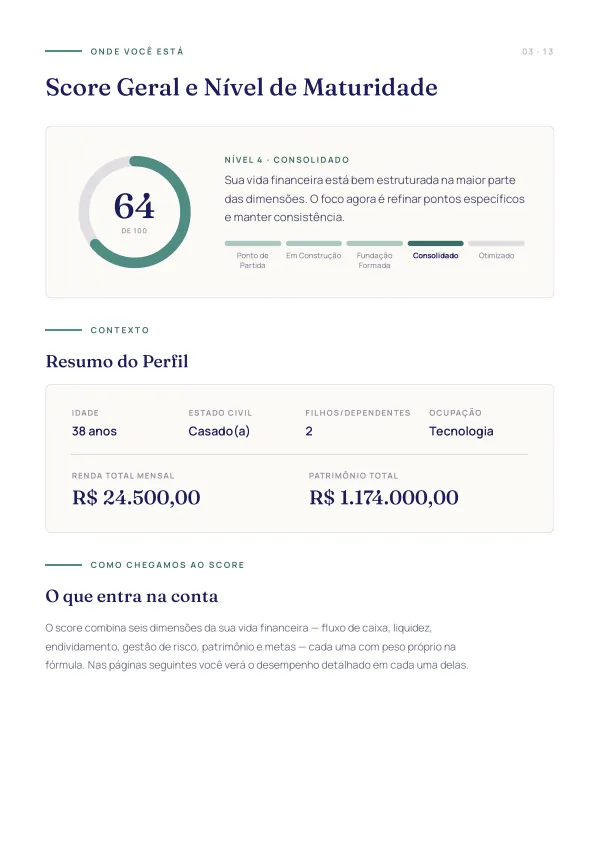
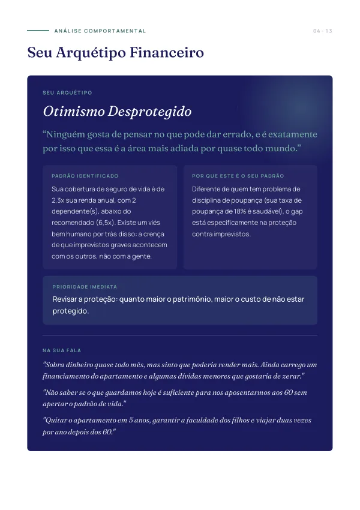
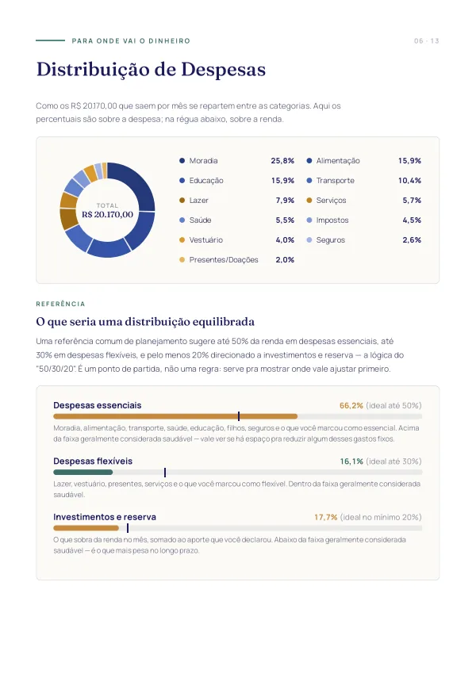
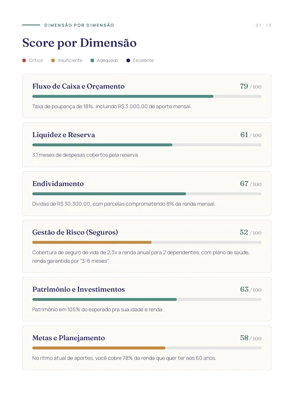
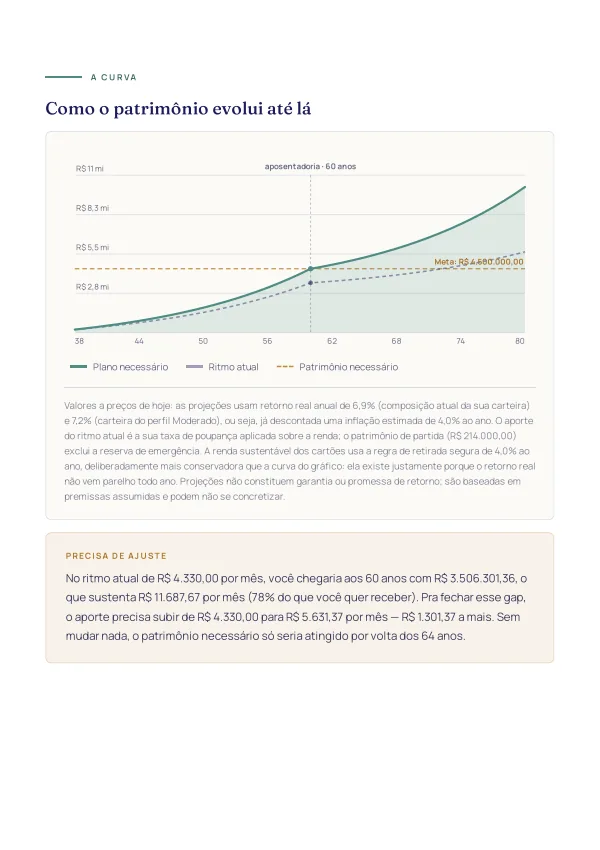
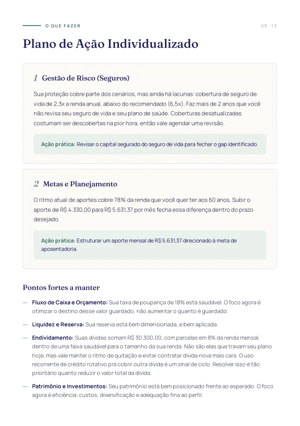
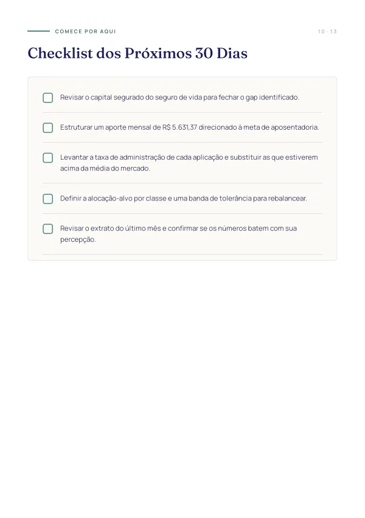

Seção 3 de 13
Score geral e nível
A nota de 0 a 100, o nível de maturidade em cinco estágios e o que o número quer dizer na prática.
Você responde um questionário guiado sobre renda, gastos, patrimônio, dívidas, proteção e objetivos. Na hora, descobre exatamente onde você está e qual é o próximo passo certo, escrito com todas as letras.
É que ninguém nunca juntou os seus números num lugar só. Repare na diferença entre as duas listas abaixo.
Nenhuma das quatro perguntas da direita se responde com força de vontade: cada uma depende de contas que cruzam renda, gastos, dívidas, proteção e prazo. O diagnóstico transforma essa lista em números seus, cada um com valor, prazo e ordem de prioridade.
Nada de relatório de prateleira: os números, as prioridades e as recomendações saem todos das suas respostas. O relatório responde três perguntas, nesta ordem.
A saúde da sua vida financeira em um número, com o seu nível de maturidade em 5 estágios, do Ponto de Partida ao Otimizado.
Fluxo de caixa, liquidez, endividamento, proteção, patrimônio e metas, cada um com nota, faixa e a explicação do porquê.
Taxa de poupança, meses de cobertura da reserva, comprometimento de renda, índice de solvência, cobertura de seguro e mais.
Os pontos em que a sua sensação sobre o próprio dinheiro diverge dos números reais. Costuma ser a parte que mais abre os olhos.
Qual dos 8 perfis comportamentais explica a sua relação com o dinheiro hoje. E por que ele, e não os outros sete.
O que você escreveu sobre a sua situação, suas dores e seus sonhos entra no relatório e conversa com os números encontrados.
Quanto você terá na idade em que quer parar, mantendo o ritmo atual, e quanto precisaria guardar por mês para bancar a renda que quer. Tudo a preços de hoje, já descontada a inflação.
O patrimônio necessário para a renda que você quer, seja vivendo só do rendimento ou consumindo o patrimônio até uma idade definida, e a distância exata entre ele e o que você já tem.
Para cada ponto fraco, o diagnóstico e o que fazer a respeito, na ordem certa de prioridade. E a lista do que já está bom e merece ser mantido.
Até cinco tarefas objetivas para as próximas semanas, priorizadas pelo que mais destrava a sua situação específica.
Classes de aplicação de baixo risco e boa liquidez para a reserva e o curto prazo, como CDB 100% do CDI e Tesouro Selic.
Se o seu caso pede 3, 6 ou 12 meses de acompanhamento, com a justificativa baseada nas dimensões críticas encontradas.
Ainda no relatório: glossário sem jargão dos conceitos usados e uma versão para impressão e PDF, para guardar e comparar quando você refizer o diagnóstico.
Dez etapas guiadas, cerca de 15 minutos. Tudo fica salvo no seu navegador, então dá pra parar no meio e continuar depois de onde estava.
Ao finalizar, o relatório é gerado imediatamente. Sem espera, sem "enviaremos em até 5 dias úteis".
Comece pelo checklist de 30 dias. Se quiser ir além, o próprio relatório indica o acompanhamento que faz sentido pro seu caso.
Score geral, nível de maturidade e o desempenho em cada uma das seis dimensões avaliadas.
O diagnóstico não classifica você por quanto ganha, e sim pelo padrão que os seus números revelam. São oito, e o relatório explica por que o seu é aquele, e não os outros sete. Abaixo, a frase de abertura que cada um recebe.
Este é o relatório completo de um perfil de exemplo: Mariana, 38 anos, casada, dois filhos, R$ 24.500 de renda no casal. São 13 seções montadas pelo diagnóstico a partir das respostas dela, sem nenhum ajuste manual depois. É uma pessoa inventada para ilustrar o produto, não uma cliente — mas as páginas são as que o diagnóstico gera de verdade.







Essas são nove das treze seções. O relatório inteiro, do jeito que sai para quem faz o diagnóstico, está aqui:

O diagnóstico traduz em software o mesmo método que a HZ Invest usa no atendimento individual: seis dimensões avaliadas, pesos definidos por relevância e recomendações que saem dos seus números, não de um modelo genérico. É a porta de entrada para quem quer clareza antes de decidir qualquer coisa.
Relatos de quem respondeu o questionário e recebeu o relatório completo.
Um retrato honesto da sua vida financeira, com o próximo passo escrito com todas as letras. E ele fica com você para sempre.
Antes de abrir as vendas, quero rodar o diagnóstico com um grupo pequeno de pessoas de verdade. São 10 vagas sem custo: você faz o diagnóstico completo e, em troca, me conta com honestidade o que funcionou e o que não funcionou.
Quero uma das 10 vagas Sem cartão, sem pegadinha. Preciso só do seu feedback depois.Depois de receber o relatório, a equipe de consultoria da HZ Invest entra em contato pelo e-mail que você informou, em até 3 dias úteis, para combinar uma conversa de 30 minutos, tirar dúvidas sobre o que o diagnóstico encontrou e definir por onde começar. Sem custo adicional e sem compromisso de contratar nada.
Seus dados são usados apenas para gerar o seu diagnóstico, com acesso restrito à HZ Invest. Você pode pedir acesso, correção ou exclusão quando quiser. Veja a Política de Privacidade.
Não. As perguntas são sobre a sua vida: quanto entra, quanto sai, o que você tem e o que te preocupa. Onde aparece algum termo técnico, o relatório traz um glossário em português claro.
Valores aproximados já geram um diagnóstico útil. Quanto mais próximos da realidade, mais preciso o resultado. E como dá para salvar e continuar depois, você pode parar para conferir um extrato e voltar.
Não. É um diagnóstico educacional e orientativo: ele mostra onde você está e o que priorizar, sem recomendar ativos específicos. Se fizer sentido seguir para um acompanhamento individualizado, o próprio relatório indica o formato e a duração.
Na hora. Assim que você finaliza o questionário, o relatório é gerado e fica disponível para leitura, com um botão que abre a versão para impressão, de onde você salva em PDF.
Suas respostas são usadas para gerar o seu relatório e ficam guardadas com acesso restrito à HZ Invest. Você pode pedir acesso, correção ou exclusão a qualquer momento. Os detalhes estão na Política de Privacidade.
Planilha mostra o que entrou e o que saiu. Ela não diz se a sua reserva está no tamanho certo, se o seu seguro cobre o que deveria, se o seu patrimônio está no ritmo da sua idade ou o que resolver primeiro. O diagnóstico compara os seus números com referências de planejamento e devolve prioridade, não só registro. Aliás, se o que você precisa agora é organizar o mês, temos uma planilha de orçamento gratuita aqui no site.
O relatório é gerado automaticamente pela metodologia desenvolvida pela HZ Invest, e é por isso que ele fica pronto na hora, sem fila de espera. A leitura humana do seu caso vem depois, na conversa de 30 minutos com a consultoria que está inclusa: é ali que alguém da HZ olha o que o diagnóstico encontrou junto com você. Se depois disso você quiser acompanhamento contínuo, o caminho é o acompanhamento individual, e o próprio relatório indica se ele faz sentido pra você.
Sim, e é justamente o recomendado: refazer depois de alguns meses mostra a evolução do seu score e das dimensões que você trabalhou.
É exatamente isso que o diagnóstico resolve: números seus, um retrato honesto e o próximo passo escrito com todas as letras.
Descobrir onde eu estou